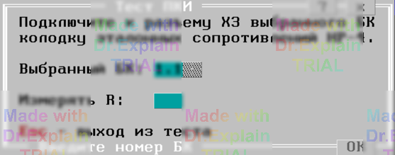

2.7 Тест самоконтроля "ПКИ"
Тест заключается в проверке платой ПКИ эталонных сопротивлений по нижней и верхней границе допуска.
Если тест вызван автономно (не в режиме "Все тесты"),
то предоставляется меню, показанное на рисунке:

Пункт "Выбранный БК" задает номер БК в формате: СК.БК (например 1.2), использующегося в тесте для подключения колодки эталонных сопротивлений НР-4. В режиме "Все тесты" по умолчанию используется БК1.1.
Пункт "Измерять R" требует осуществлять измерение значений эталонных сопротивлений методом подбора уставок. В режиме "Все тесты" это измерение не производится.
Для каждого эталонного сопротивления:
- Нижняя граница допуска определяется как значение номинала, умноженное на 0.85;
- Верхняя граница допуска определяется как значение номинала, умноженное на 1.15.